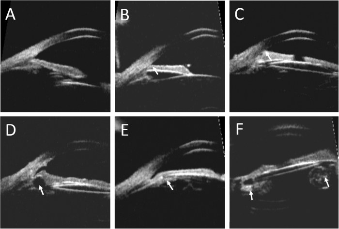
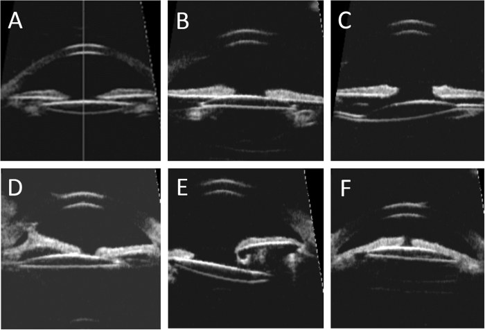

1643 — Glaucoma sau mổ đục thể thủy tinh bẩm sinh ở trẻ / Glaucoma following cataract surgery (GFCS) in children
Tags: pattern:tang-nhan-ap pattern:goc-mo pattern:goc-dong pattern:di-lenh-IOL pattern:loi-dia-thi pattern:nhieu-dich-kinh vung:mat vung:tien-phong score:CRN score:IATS-risk protocol:do-nhan-ap protocol:UBM protocol:AS-OCT protocol:OCT-ONH protocol:sieu-am-B anatomy:tien-phong
Mức chắc chắn (certainty): tổng hợp y văn (literature synthesis) — 1 tổng quan hệ thống 28–36 nghiên cứu (BMC Ophthalmol 2026, PMC13281633), 1 phân tích hậu kiểm RCT IATS 10,5 năm (Ophthalmol Glaucoma 2025, PMC13705203), 1 đoàn hệ 259 mắt (BMC Ophthalmol 2022, PMC8918280), 1 đoàn hệ UBM 40 mắt (Sci Rep 2017, PMC5318954), 1 tổng quan điều trị 39 nghiên cứu (J Clin Med 2022, PMC8879979) và 1 tổng quan phẫu thuật 2025 (Front Med 2025, PMC12511033). Lịch theo dõi cụ thể không có đồng thuận — phần gợi ý được ghi rõ là suy luận thực hành.
Câu chốt: GFCS là glaucoma thứ phát sau mổ đục thể thủy tinh, phần lớn góc MỞ (75–94%), đến muộn nhiều năm, và nhãn áp một lần đo không đủ để chẩn đoán. Ba con số phải thuộc: (1) tần suất 3,3–25,5% (36 nghiên cứu), IATS tăng từ 17% ở 5 năm lên 22% ở 10 năm, và tới 41% "glaucoma hoặc nghi glaucoma" ở 10,5 năm; (2) mổ khi < 9 tháng làm tăng nguy cơ tới 7,2 lần — 37% vs 6%, 29,2% vs 3,4%; (3) tiền phòng nông trước mổ (ACD 2,76 vs 3,08 mm) là yếu tố dự báo mạnh (OR 5,8). Sai lầm chết người về thị lực: đo nhãn áp một lần dưới mê thấy bình thường rồi thôi theo dõi, hoặc gọi tăng nhãn áp do corticoid là GFCS rồi mổ không cần thiết.
1. Tổng quan bệnh học – cơ chế hình ảnh
1.1 Định nghĩa và vì sao "glaucoma" khác "tăng nhãn áp đơn thuần"
- Định nghĩa CRN (Childhood Glaucoma Research Network): IOP > 21 mmHg kèm biến đổi giải phẫu đĩa thị hoặc cận thị tiến triển (dẫn trong PMC8879979). Nghĩa là một con số IOP không đủ — phải có bằng chứng cấu trúc: lõm đĩa thị, giãn nhãn cầu, tăng chiều dài trục.
- Vị trí trong phân loại: GFCS chiếm 18% glaucoma ở trẻ em (PMC8879979); là thể thứ phát hay gặp nhất sau mổ đục thể thủy tinh.
- Hai cơ chế — hai hình thái:
- Góc mở (75–94%): tổn thương bè củng mạc do viêm, mảnh thể thủy tinh còn lại, mất "giá đỡ cơ học" của thể thủy tinh sau cắt bao, hẹp ống Schlemm, góc chưa trưởng thành bị can thiệp quá sớm. Đây là loại đến muộn, tiến triển âm thầm.
- Góc đóng (sớm, hiếm hơn): dính góc trước (PAS), vòng Soemmering to, IOL lệch/sulcus, block đồng tử, viêm – màng xuất tiết. Thường trong vài tuần đầu sau mổ.
- Thời điểm — mô hình hai đỉnh: đỉnh sớm vài tuần đến vài tháng (góc đóng/viêm) và đỉnh muộn nhiều năm (góc mở). Trong đoàn hệ UBM, khoảng cách từ mổ tới chẩn đoán 4,42 ± 2,65 năm (0,42–8,67) (PMC5318954); y văn ghi 2,5 tháng đến > 5 năm (PMC7930951).
- TẠI SAO trẻ nhỏ nguy cơ cao: góc tiền phòng chưa hoàn thiện, đường kính giác mạc nhỏ, nhãn cầu ngắn; cắt thể thủy tinh sớm làm mất lực căng của dây chằng – bao sau, khiến bè củng mạc xẹp và góc hẹp lại. Cộng thêm viêm sau mổ và corticoid — hai yếu tố vừa gây bít bè vừa gây tăng nhãn áp.
- Số liệu tần suất (định lượng):
- Tổng quan 36 nghiên cứu: 3,3–25,5%; tổng quan khác 6–32% (PMC13281633).
- IATS (114 trẻ mổ 1–6 tháng, một bên): 17% ở 5 năm → 22% ở 10 năm (PMC8879979; PMC13281633).
- IATS 10,5 năm: 41% đạt tiêu chuẩn glaucoma hoặc nghi glaucoma (PMC13705203).
- Đoàn hệ 259 mắt (Wenzhou): biến cố liên quan glaucoma 8,1%, tăng nhãn áp do corticoid 10,4%; tích lũy 0% / 1,2% / 1,2% / 1,6% / 4,0% / 8,9% ở 1 / 6 / 12 / 24 / 36 / 48 tháng (PMC8918280).
- Yếu tố nguy cơ — bằng số:
- Tuổi mổ < 9 tháng: nguy cơ tới 7,2 lần; 37% vs 6%; 29,2% vs 3,4% (PMC13281633).
- Tiền phòng nông trước mổ: ACD 2,76 ± 0,48 mm (có glaucoma) vs 3,08 ± 0,38 mm (không); OR 5,8 (1,8–18,9), P = 0,004. Ngược lại chiều dài trục ngắn không dự báo (OR 1,0; 0,7–1,4) (PMC13705203).
- Giác mạc nhỏ (microcornea, đường kính ≤ 10 mm), đục thể thủy tinh nhân hoặc toàn bộ, bệnh sử gia đình.
- Đoàn hệ 259 mắt: gia đình có đục thể thủy tinh bẩm sinh HR 50,46 (7,05–361,14); CCT dày HR 1,021 mỗi µm (1,009–1,034); đường kính giác mạc ngang HR 3,922 (1,558–9,804); độ dày thể thủy tinh HR 3,745 (1,344–10,417) (PMC8918280).
- IOL sulcus và dính góc trên UBM: xem mục 1.2.
1.2 Hình ảnh cung cấp gì mà nhãn áp không cung cấp được
- Nhãn áp ở trẻ là phép đo kém tin cậy: trẻ không hợp tác, phải đo dưới mê, một lần đo chỉ là một điểm; giác mạc dày làm IOP đọc cao giả (và CCT dày cũng là yếu tố nguy cơ trong đoàn hệ trên).
- UBM (siêu âm sinh học 50 MHz) là chìa khóa vì nhìn được góc, mống mắt, thể mi, bao sau, IOL sau mổ:
- Iris cắm cao (high insertion of iris): chân mống mắt bám ra trước hơn bình thường — gặp 13/40 mắt (32,5%), là yếu tố nguy cơ độc lập cho glaucoma (OR 3,40; 1,03–11,17; p = 0,03) (PMC5318954).
- IOL sulcus là yếu tố nguy cơ độc lập (OR 1,39; 1,07–4,85; p = 0,04); IOL trong bao làm giảm nguy cơ 14 lần so với sulcus (tổng quan, PMC13281633).
- AOD500 (khoảng mở góc ở 500 µm) nhỏ hơn ở mắt có glaucoma (p = 0,01); PAS nhiều hơn (p = 0,015); CCT dày hơn (p = 0,04); IOP lúc khám cuối 17,29 ± 5,42 vs 13,88 ± 3,52 mmHg (p = 0,011) (PMC5318954).
- Nguyên nhân góc hẹp nhìn thấy trên UBM: vòng Soemmering to, nang thể mi/mống mắt (6/40 mắt, 15%), mảnh thể thủy tinh tồn lưu, IOL lệch/subluxation.
- AS-OCT (khi giác mạc trong): đo góc, độ sâu tiền phòng, vị trí IOL không cần tiếp xúc; B-scan khi đục giác mạc/dịch kính không nhìn được đáy mắt.
- OCT đĩa thị – lớp sợi (RNFL/GCL): máy cầm tay cho trẻ nằm; so sánh theo dõi dọc quan trọng hơn một lần đo; lõm đĩa thị tiến triển là tiêu chuẩn CRN.
- Chiều dài trục (AL): tăng nhanh hơn đường cong tăng trưởng = nhãn cầu giãn do áp lực (buphthalmos), tương đương "cận thị tiến triển" trong tiêu chuẩn CRN.
2. Mẫu hình + chẩn đoán phân biệt theo cơ chế (gamut)
2.1 Gamut theo cơ chế và thời điểm
- Góc mở, đến muộn (phần lớn): GFCS góc mở; tăng nhãn áp do corticoid (xảy ra sớm, trong khi còn nhỏ thuốc, và giảm khi ngừng — 10,4% trong đoàn hệ 259 mắt); mảnh thể thủy tinh tồn lưu gây viêm/bít bè.
- Góc đóng, đến sớm: PAS sau viêm; vòng Soemmering to; IOL lệch/sulcus; block đồng tử (mống mắt dính bao sau); xuất huyết tiền phòng.
- Không phải GFCS (đừng gộp): glaucoma bẩm sinh nguyên phát (PCG) — có giãn nhãn cầu, phù giác mạc, rách Descemet từ trước mổ; glaucoma thứ phát sau viêm nội nhãn/màng đồng tử; glaucoma sau mổ võng mạc (dầu silicone, khí).
2.2 Mẫu hình trên UBM — 4 hình thái phải nhận ra
- Iris cắm cao: chân mống mắt ra trước, góc hẹp toàn bộ — nguy cơ OR 3,40.
- PAS: mống mắt dính vào giác mạc ngoại vi, góc đóng khu trú.
- Vòng Soemmering to / mảnh thể thủy tinh: khối hồi âm dày sau mống mắt, đẩy mống mắt ra trước, góc hẹp.
- IOL lệch/sulcus: IOL không nằm trong bao, một hàptic ra sulcus, nghiêng/chuyển ra trước, có thể cọ vào thể mi.
3. Bảng so sánh phân biệt (ma trận đối chiếu)
| Thực thể (entity) | Hình ảnh điển hình (UBM/AS-OCT/OCT/AL) | Chốt vào (rule-in) | Chốt loại (rule-out) | Gợi ý xác nhận |
|---|---|---|---|---|
| GFCS góc mở | Góc mở nhưng AOD500 nhỏ, iris cắm cao, PAS ít, đĩa thị lõm tiến triển, AL tăng nhanh; không có mảnh thể thủy tinh lớn | Tiền sử mổ đục TTT + IOP > 21 + lõm đĩa/AL tăng, góc mở | Góc đóng hoàn toàn do PAS/Soemmering → thể góc đóng | UBM + OCT ONH theo dõi dọc |
| Tăng nhãn áp do corticoid | Góc mở, không PAS, không thay đổi đĩa thị nếu mới; IOP tăng trong vài tuần sau mổ khi đang nhỏ corticoid | IOP giảm sau ngừng/giảm corticoid, không có tổn thương đĩa thị | IOP vẫn cao sau ngừng corticoid 2–4 tuần → không phải do corticoid | Ngừng thử corticoid có kiểm soát + đo lại |
| Vòng Soemmering to | Khối hồi âm dày sau mống mắt, đẩy mống mắt ra trước, góc hẹp khu trú | Thấy khối sau mống mắt + góc hẹp tương ứng | Không có khối, góc đều → không phải | UBM; có thể cần mổ lấy vòng |
| PAS / góc đóng | Mống mắt dính vào nội mạc giác mạc ngoại vi, góc đóng, có thể IOP tăng cấp | PAS thấy rõ + góc đóng | Góc mở đều, không dính → không phải | UBM/AS-OCT; gonioscopy khi hợp tác |
| IOL lệch/sulcus | IOL ngoài bao, nghiêng, một hàptic ở sulcus, có thể cọ thể mi | IOL không nằm trong bao + lệch trục | IOL trong bao, trung tâm → nguy cơ thấp hơn | UBM; AS-OCT |
| PCG (glaucoma bẩm sinh nguyên phát) | Giãn nhãn cầu, phù giác mạc, rách Descemet, góc dị dạng từ trước mổ | Bệnh cảnh từ lúc sinh, chưa mổ đục TTT | Tiền sử mổ đục TTT + góc không dị dạng → GFCS | Khám dưới mê + UBM; phân loại CRN |
3.1 Ba câu hỏi để không gọi nhầm
- Có tiền sử mổ đục thể thủy tinh không? Không → không phải GFCS, tìm PCG/dị dạng góc.
- Góc mở hay đóng? UBM/AS-OCT trả lời; góc đóng do PAS/Soemmering là thể có thể mổ giải quyết nguyên nhân.
- Có bằng chứng cấu trúc tiến triển không? So ảnh đĩa thị/AL cũ — nếu không có, chẩn đoán "nghi glaucoma" và theo dõi, đừng mổ ngay.
4. Protocol khám – theo dõi – phân độ
4.1 Khám hình ảnh tối thiểu (mỗi lần)
- Nhãn áp: cùng máy, cùng thời điểm, cùng tư thế; ghi rõ có/không mê, thuốc mê, CCT. Không so sánh IOP đo dưới mê với IOP đo lúc thức.
- CCT (bản đồ giác mạc): vì CCT dày là yếu tố nguy cơ (HR 1,021/µm) và làm IOP đọc cao; ghi kèm mọi lần đo.
- Chiều dài trục (AL): A-scan immersion hoặc IOLMaster; vẽ đường cong theo tuổi; tăng vượt bậc = dấu hiệu giãn nhãn cầu.
- UBM 50 MHz: đo ACD, AOD500, TIA, tìm iris cắm cao, PAS, Soemmering, nang thể mi, mảnh thể thủy tinh, vị trí IOL.
- AS-OCT khi giác mạc trong; B-scan khi đục môi trường.
- OCT ONH/RNFL/GCL cầm tay + ảnh đĩa thị màu: so theo dõi dọc; lõm đĩa tăng và RNFL mỏng dần là bằng chứng tổn thương.
- Đo khúc xạ dưới cycloplegia: cận thị tăng nhanh là tiêu chuẩn CRN.
4.2 Phân tầng nguy cơ và lịch theo dõi
- Nguy cơ cao: mổ < 9 tháng, microcornea ≤ 10 mm, ACD nông < 2,8 mm, aphakia, IOL sulcus, iris cắm cao, viêm sau mổ, gia đình có đục TTT bẩm sinh.
- Nguy cơ thấp: mổ > 2 tuổi, IOL trong bao, ACD bình thường, không microcornea, không viêm.
- Không có lịch được chứng minh bằng RCT — đây là suy luận thực hành dựa trên đường cong tích lũy (8,9% ở 48 tháng; tiếp tục tăng tới 10,5 năm): nguy cơ cao: IOP + đĩa thị mỗi 3 tháng trong 2 năm đầu, sau đó mỗi 6 tháng; nguy cơ thấp: mỗi 6 tháng trong năm đầu, sau đó hằng năm; theo dõi suốt đời.
- Khi nào chụp lại UBM: IOP tăng không giải thích, góc hẹp mới, IOL nghi lệch, hoặc trước khi quyết định mổ góc.
flowchart TD
A[Trẻ đã mổ đục thể thủy tinh bẩm sinh] --> B{Nguy cơ cao?}
B -->|Có: mổ < 9 tháng, microcornea, ACD nông, aphakia, IOL sulcus| C[IOP + CCT + AL + OCT ONH mỗi 3 tháng trong 2 năm]
B -->|Không| D[IOP + CCT + AL + OCT ONH mỗi 6 tháng năm đầu, sau đó hằng năm]
C --> E{IOP > 21 mmHg hoặc lõm đĩa/AL tăng?}
D --> E
E -->|Không| F[Tiếp tục theo dõi suốt đời]
E -->|Có| G[UBM / AS-OCT: góc mở hay đóng?]
G -->|Góc mở| H[GFCS góc mở: thuốc → góc mổ 360° → GDD]
G -->|Góc đóng do PAS/Soemmering/IOL| I[Giải quyết nguyên nhân + thuốc + mổ góc]
H --> J[Theo dõi OCT ONH + AL sau điều trị]
I --> J
4.3 Điều trị — ngưỡng và kết quả (để tư vấn, không phải để tự làm)
- Thuốc: 17–73% kiểm soát được bằng thuốc đơn thuần; phẫu thuật cần ở 27–83%; 30–40% chỉ cần một lần mổ, hơn nửa cần ≥ 2 lần (PMC8879979).
- Mổ góc: goniotomy 81,8% thành công (tổng quan 2026); trabeculotomy 360° đạt tới 93% sau trung bình 3,3 năm; góc mổ cũ 180° chỉ 16% — vì vậy 360° là lựa chọn đầu tay ở GFCS góc mở (PMC13281633; PMC8879979; PMC7930951).
- Trabeculectomy: tỉ lệ thành công thấp hơn ở trẻ, không dùng được kính tiếp xúc (quan trọng với mắt aphakia), nguy cơ rò/dọa nhiễm.
- Van dẫn lưu (GDD): hiệu quả cao hơn trabeculectomy nhưng biến chứng (xuất huyết trên hắc mạc khi nhãn áp thấp, tổn thương nội mô do ống).
- Cyclodestruction: để cuối, nguy cơ viêm/teo nhãn cầu.
5. Biến thể bình thường và cạm bẫy
- "IOP bình thường dưới mê" không loại glaucoma: thuốc mê hạ nhãn áp, và một lần đo không đại diện đường cong 24 giờ. Luôn ghi điều kiện đo và so với các lần trước.
- Giác mạc dày → IOP cao giả: ở trẻ microcornea/CCT dày, đừng chẩn đoán glaucoma chỉ vì IOP 22–24 mmHg; cần bằng chứng đĩa thị/AL. Nhưng CCT dày cũng là yếu tố nguy cơ, nên không bỏ theo dõi.
- "IOL trong bao là an toàn": IATS cho thấy nguy cơ glaucoma tương đương giữa aphakia và pseudophakia ở 5–10 năm; đừng giảm tần suất theo dõi chỉ vì đã đặt IOL trong bao (PMC8879979).
- UBM bị ép: đầu dò ấn mạnh làm góc mở giả; dùng gel đệm, đo góc ở vị trí không bị ép, so hai bình diện.
- Vòng Soemmering đọc nhầm là "mảng xơ" — nhìn hồi âm và vị trí sau mống mắt, không nằm trong thành mạch.
- Nhầm tăng nhãn áp do corticoid với GFCS: 10,4% trẻ sau mổ có tăng IOP do corticoid; thử ngừng/giảm corticoid trước khi quyết định mổ. Ngược lại, đừng ngừng corticoid quá sớm ở trẻ còn viêm — viêm cũng gây bít bè.
- Bỏ sót mắt còn lại: GFCS thường một bên (nhất là đục TTT một bên), nhưng mắt còn lại vẫn phải đo vì bệnh lý nền/dị dạng góc có thể hai bên.
- Theo dõi suốt đời: nguy cơ không dừng ở 5 năm — 41% ở 10,5 năm; chuyển tuyến người lớn phải kèm hồ sơ UBM/OCT/AL, không chỉ "đã mổ đục TTT".
6. Tự lượng giá — Blind Quiz
Ca 1 — Bé gái 8 tháng, mổ đục thể thủy tinh bẩm sinh hai bên lúc 2 tháng; nay IOP 24 mmHg mắt phải, giác mạc trong.

- Gợi ý: so A (chứng bình thường) với B–F.
- Câu hỏi: (1) Những hình thái nào làm hẹp góc? (2) Hình nào là yếu tố nguy cơ độc lập cho glaucoma? (3) Bước tiếp theo?
Bấm để hiện đáp án (findings + chẩn đoán)
- Findings: (A) góc bình thường; (B) iris cắm cao — chân mống mắt ra trước; (C) PAS — mống mắt dính ngoại vi; (D) nang thể mi gây hẹp góc khu trú; (E) vòng Soemmering to đẩy mống mắt ra trước; (F) mảnh thể thủy tinh tồn lưu trong bao.
- Yếu tố nguy cơ độc lập: iris cắm cao (OR 3,40); IOL sulcus (OR 1,39) — trong đoàn hệ 40 mắt, glaucoma 22,5%, khoảng cách mổ–chẩn đoán 4,42 ± 2,65 năm.
- Bước tiếp theo: đo AL, CCT, OCT đĩa thị, so ảnh cũ; không mổ ngay nếu chưa có bằng chứng cấu trúc tiến triển; kiểm tra corticoid đang dùng.
- Nguồn ảnh: Sci Rep 2017, Fig. 1 — PMC5318954, CC BY 4.0 (nguyên bản).
Ca 2 — Bé trai 3 tuổi, đã mổ đục thể thủy tinh lúc 4 tháng, đặt IOL; UBM kiểm tra vì IOP 26 mmHg.

- Gợi ý: so A–B (vị trí tốt) với C–F (bất thường).
- Câu hỏi: (1) Mô tả vị trí IOL ở C–F; (2) Vị trí nào làm tăng nguy cơ glaucoma? (3) Có cần mổ lại không?
Bấm để hiện đáp án
- Findings: (A) IOL trong bao, trung tâm; (B) IOL sulcus nhưng cân; (C) nghiêng do một hàptic trong bao, một ở sulcus; (D) lệch trung tâm + dính mống mắt; (E) subluxation do bao không đủ; (F) IOL chuyển ra trước, cắm vào thể mi.
- Nguy cơ: sulcus là yếu tố nguy cơ độc lập (OR 1,39); IOL trong bao giảm nguy cơ 14 lần so với sulcus (tổng quan).
- Có mổ lại không: chỉ khi IOL lệch gây cọ thể mi, viêm, hoặc góc đóng; không mổ lại chỉ vì IOL sulcus nếu IOP kiểm soát và không có tổn thương đĩa thị.
- Nguồn ảnh: Sci Rep 2017, Fig. 2 — PMC5318954, CC BY 4.0 (nguyên bản).
Ca 3 — Câu hỏi ngắn (không cần ảnh): Bé 5 tuổi, mổ đục TTT lúc 3 tháng, IOP 23 mmHg, CCT 640 µm, đĩa thị CDR 0,4 hai bên, AL tăng 0,3 mm trong 6 tháng. Xử trí?
Bấm để hiện đáp án
- Không kết luận glaucoma chỉ vì IOP 23 — nhưng AL tăng nhanh là tiêu chuẩn cấu trúc (tương đương cận thị tiến triển), nên coi là nghi glaucoma.
- Cần: UBM/AS-OCT góc, OCT ONH/RNFL cầm tay, so AL theo đường cong, kiểm tra corticoid; nếu góc mở và không có nguyên nhân đóng → theo dõi sát 3 tháng, điều trị thuốc nếu IOP tăng kèm tổn thương.
- Nếu góc đóng do PAS/Soemmering/IOL → giải quyết nguyên nhân; nếu góc mở tiến triển → góc mổ 360° (thành công tới 93%), không chờ mù.
Bài liên quan chéo
- 400 – Tổng quan Mắt & thị giác
- 413 – PFV/PHPV (tồn tại tuần hoàn bào thai) — microphthalmos và góc dị dạng, một hàng DDx của GFCS.
- 411 – Siêu âm nhãn cầu — kỹ thuật B-scan/UBM nền tảng.
- 433 – Phù đĩa thị vs drusen — đọc đĩa thị/OCT.
- 1641 – OPMD & OPDM — ví dụ bài mắt–thần kinh dùng cùng khung 6 mục.
Ảnh
1643_glaucoma-sau-mo_UBM_PMC5318954-F1.jpg— UBM 6 ô (góc bình thường + 5 bất thường), CC BY 4.0, nguyên bản.1643_vi-tri-IOL_UBM_PMC5318954-F2.jpg— UBM 6 ô vị trí IOL, CC BY 4.0, nguyên bản.- Không tạo ảnh ghép (không cần; giữ nguyên bản để giữ chi tiết giải phẫu).
Không dùng để chẩn đoán độc lập khi chưa có người hướng dẫn.